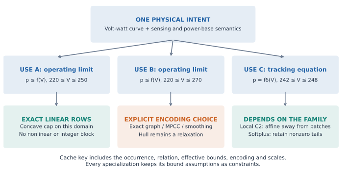
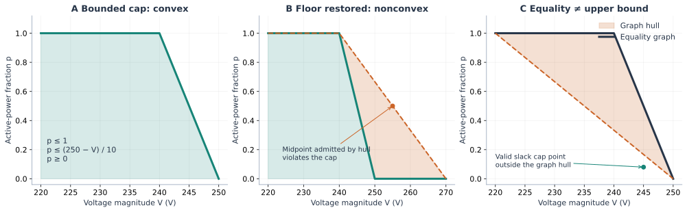
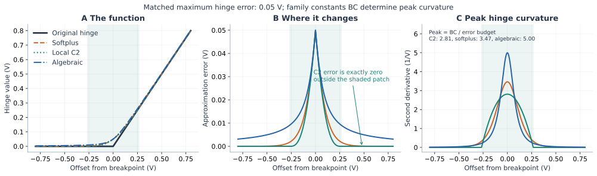

Bounds and constraint direction change the formulation
Start with the physical relation, then specialize each occurrence. A controller tracking equation, an operating limit and an outer relaxation are different mathematical objects. The same volt-watt characteristic can require nonlinear or integer equations at one occurrence and only linear inequalities at another.
For power engineers, the central distinction is request versus permission: an upper limit permits further curtailment. For OR researchers, this is the graph versus hypograph distinction. For implementers, it determines which bounds and relation metadata must accompany each use of a curve.

Derive the volt-watt example before choosing a solver
Use a deliberately simple continuous characteristic, with voltage in volts and power as a fraction of a fixed positive base:
\[f(V)=\max\left(0,\min\left(1,\frac{250-V}{10}\right)\right).\]
These numbers are pedagogical, not a prescribed grid-code setting. On 220 ≤ V ≤ 250, the high-voltage zero floor is unreachable except at its joining point. Thus f(V)=min(1,(250-V)/10) is concave on this domain. The operating cap 0 ≤ p ≤ f(V) is exactly
\[p\geq0,\qquad p\leq1,\qquad p\leq(250-V)/10,\qquad 220\leq V\leq250.\]
There is no approximation error and no integer or nonlinear curve block. It is better to call this an exact polyhedral formulation than a hull approximation. The existence of the cheap formulation follows analytically; its runtime benefit in a complete application remains an empirical question.

On 220 ≤ V ≤ 270, the slopes are 0, -0.1, 0: the floor restores a slope increase and concavity is lost. The points (240,1) and (270,0) satisfy the cap; their midpoint (255,0.5) violates it because f(255)=0. This proves nonconvexity, independently of any solver experiment. The hull fills that gap.
Even on the restricted domain, p = f(V) is generally nonconvex. Replacing it by upper inequalities allows slack. Maximizing power does not generally make this replacement exact when power also changes voltage, costs, limits, or other devices. An objective-specific exactness claim needs its own proof.
Likewise, conv(graph(f)) is not the entire hypograph. It has a lower boundary: in panel C it excludes a valid slack cap point. To use a graph hull for an upper limit, introduce z in the graph hull and impose p ≤ z. Projection onto (V,p) is exact for a concave f on the chosen domain. Direct supporting lines achieve the same cap without the lifted weights or z. For a nonconcave curve this projection remains a relaxation. Epigraphs reverse the condition: p ≥ f(V) is convex when f is convex. These are standard convex-analysis distinctions; see Boyd and Vandenberghe, Convex Optimization, §3.1.
The complete formulation=:auto policy on the effective domain is:
| Curve shape | :equal | :upper (y ≤ f) | :lower (y ≥ f) |
|---|---|---|---|
| Affine | Exact affine | Exact affine | Exact affine |
| Concave, nonaffine | Unresolved | Supporting lines | Unresolved |
| Convex, nonaffine | Unresolved | Unresolved | Supporting lines |
| Neither | Unresolved | Unresolved | Unresolved |
A fixed input is affine after evaluation. “Unresolved” means an explicit encoding is needed; it does not mean the problem is impossible to solve.
Why volt-watt and volt-var often lower differently
The operating role matters as much as the curve. In this example, the plateau followed by a descending ramp has non-increasing slopes before its output floor: combined with an upper-limit role, it admits exact linear rows. A representative volt-var characteristic contains descending ramps and a deadband; its slopes increase and decrease, and a tracking equality generally needs a nonconvex graph or a smooth surrogate. These control-versus-limit semantics are discussed in the OpenDSS guide.
This is a conditional modeling advantage, not a universal grid-code property. Monotonic decrease of function values alone does not imply concavity: slopes -2, -1 define a decreasing convex curve. Additional volt-watt slope changes, reaching the floor, or treating the law as tracking can remove the linear option. A volt-var occurrence confined to one segment is affine and inexpensive too. Always inspect the actual curve, domain and relation.
Inspect the plan and build the relation
using PowerOptLab,JuMP,Ipopt
intent=VoltVarWattIntent(
volt_watt=PWLFunction([220.,240.,250.,270.],[1.,1.,0.,0.]))
plan=plan_pwl_relation(intent.volt_watt,(220.,250.);relation=:upper)
@assert plan.shape==:concave && plan.strategy==:supporting_lines
planPWLRelationPlan(:upper, concave on (220.0, 250.0) → supporting_lines, 2 affine lines, exact_relation)relation=:equal, :upper, or :lower specifies the meaning of the output. formulation=:auto applies only justified exact affine/polyhedral lowering. An unresolved plan can be inspected; attempting to build it raises UnsupportedFormulation before adding constraints. reason_code provides a machine-readable explanation; reason supplies descriptive text. This avoids silently choosing a different problem or an optimizer when the domain is nonconvex.
m=Model(Ipopt.Optimizer)
set_silent(m)
@variable(m,220<=V<=250,start=245.)
@variable(m,p>=0)
@constraint(m,V==245.)
h=formulate_control_relation!(m,intent,:volt_watt,V,p;relation=:upper)
@objective(m,Max,p)
optimize!(m)
@assert is_solved_and_feasible(m)
@assert isapprox(value(p),.5;atol=1e-6)
@assert h.graph===nothing
(h.plan.strategy,audit_pwl_relation(h))(:supporting_lines, (input = 245.0, output = 0.5000002474944202, canonical_residual = 2.474944201802387e-7, canonical_violation = 2.474944201802387e-7, surrogate_violation = nothing, domain_violation = 0.0, strategy = :supporting_lines, semantics = :exact_relation, conservative = false, output_shift = 0.0, graph_audit = nothing))Ipopt solves these linear rows in the core tutorial because it is already a package dependency. HiGHS is the natural LP comparison in the optional example. The choice here is not a recommendation to use an NLP solver for an LP.
Bounds are read from JuMP variable-bound attributes or a fixed input value. An explicit domain=(lower_V,upper_V) is intersected with them. A general expression requires an explicit finite domain. Scales retain their physical meaning: input_scale*V is voltage and output_scale*p is a fraction. With normalized variables, declaring the physical domain explicitly also avoids a tiny numerical round-trip across an exact breakpoint influencing shape classification. The planner does not round away small nonconvex segments: slope ordering is compared using exact rational arithmetic for the supplied Float64 curve data; emitted solver coefficients and residual checks still use floating-point arithmetic.
The builder adds its effective domain as a constraint, even when it inferred that domain from variable bounds. If those attributes are later loosened, the old specialization remains restricted to its original domain. Rebuild to expand the feasible set. Tightening the bounds and calling again produces a new plan and block. It does not retroactively simplify old constraints.
Repeated calls share a handle only at the same input/output variables with the same effective domain, relation, encoding, scales, conservative-correction setting, specialization setting and lowering target. General expressions are not cached; affine and quadratic inputs are copied for faithful audits. Prepared intent is reusable across models, but model-specific relation handles are not. plan_pwl_relation is a pure inspection interface. The builder shares physical plans across distinct variables with the same curve/domain/relation/encoding, then separately caches instantiated blocks by their actual input/output variables and scales. This avoids repeating shape analysis for a fleet while preserving occurrence-specific equations. The existing formulate_control_curve! remains an output-graph builder; use the relation builder when the output already exists or its one-sided meaning matters. Full IBR stamping is not automatically rewritten by this interface.
A comparison switch, not a hidden replacement
Supply formulation=ExactPWLGraph(), PWLConvexHull(), ComplementarityGraph(), or a smoothing explicitly when required. specialize=false retains that encoding for a controlled comparison. For example, on the concave domain a graph-hull upper relation remains mathematically exact when specialization is disabled, but uses lifted rows; it is labeled accordingly. On the wider domain it is an outer relaxation. No solver status decides this classification.
include(joinpath(dirname(pathof(PowerOptLab)),"..","scripts","formulations","bounded_relations.jl"))
rows=BoundedRelationExample.run()
@assert all(r->r["run_status"] in ("finished","unsupported"),rows)
@assert all(r->r["run_status"]=="unsupported" || r["strict_solver_success"],rows)
[(r["method"],r["configuration"].upper_V,r["configuration"].relation,
r["configuration"].specialize,r["variables"],only(r["observations"]).strategy,
only(r["observations"]).canonical_violation)
for r in rows if r["run_status"]=="finished" && r["configuration"].specialize]21-element Vector{Tuple{String, Float64, Symbol, Bool, Int64, Symbol, Float64}}:
("auto", 250.0, :upper, 1, 2, :supporting_lines, 2.499090949736882e-7)
("auto", 248.0, :upper, 1, 2, :affine, 2.499090921981306e-7)
("auto", 248.0, :equal, 1, 2, :affine, 2.886579864025407e-15)
("PWLConvexHull()", 250.0, :upper, 1, 2, :supporting_lines, 2.499090949736882e-7)
("PWLConvexHull()", 270.0, :upper, 1, 6, :graph, 0.333333356393941)
("PWLConvexHull()", 248.0, :upper, 1, 2, :affine, 2.499090921981306e-7)
("PWLConvexHull()", 250.0, :equal, 1, 5, :graph, 1.990909337390434e-8)
("PWLConvexHull()", 270.0, :equal, 1, 6, :graph, 0.3333333464848508)
("PWLConvexHull()", 248.0, :equal, 1, 2, :affine, 2.886579864025407e-15)
("SoftplusFormulation(0.1)", 250.0, :upper, 1, 2, :smooth, 9.909090881166094e-9)
⋮
("SoftplusFormulation(0.1)", 250.0, :equal, 1, 2, :smooth, 0.0)
("SoftplusFormulation(0.1)", 270.0, :equal, 1, 2, :smooth, 0.0)
("SoftplusFormulation(0.1)", 248.0, :equal, 1, 2, :smooth, 0.0)
("LocalC2Formulation(0.1)", 250.0, :upper, 1, 2, :local_c2, 9.909091547299909e-9)
("LocalC2Formulation(0.1)", 270.0, :upper, 1, 2, :local_c2, 9.909091547299909e-9)
("LocalC2Formulation(0.1)", 248.0, :upper, 1, 2, :affine, 2.499090921981306e-7)
("LocalC2Formulation(0.1)", 250.0, :equal, 1, 2, :local_c2, 6.661338147750939e-16)
("LocalC2Formulation(0.1)", 270.0, :equal, 1, 2, :local_c2, 6.661338147750939e-16)
("LocalC2Formulation(0.1)", 248.0, :equal, 1, 2, :affine, 2.886579864025407e-15)The script crosses three domains, equality/upper relations and the specialization switch. It records build/solve times, model dimensions, selected strategies, semantics and canonical violations through the configurable runner. The optional solver tutorial also runs its LP/MILP comparisons with HiGHS. At 245 V the wider domain's maximizing hull gives 5/6, while the exact graph/cap gives 1/2. The earlier compilation tutorial used an upper endpoint of 280 V and obtained 0.875: the different domain explains the different hull. These are fixed-voltage checks, not scalability results or full OPF benchmarks.
The HiGHS example on [220,250] V gives the following constructed model counts for the upper relation. Counts include variable bounds, the declared-domain row and the fixed-voltage constraint; they are before solver presolve.
| Construction | Variables | Constraints | Semantics |
|---|---|---|---|
| Specialized supporting lines | 2 | 7 | Exact cap |
| Unspecialized lifted graph hull, projected as a cap | 5 | 11 | Exact cap |
| Unspecialized logarithmic segment graph, projected as a cap | 7 | 20 | Exact cap |
Direct supporting lines give the most compact of these constructed models. No statistically meaningful runtime ranking is inferred from this tiny case.
Size a hull gap before solving
hull_gap_bound computes the maximum vertical excess of the concave envelope and deficit to the convex envelope of a bounded graph. A monotone-chain scan constructs both envelopes. Between consecutive restricted curve knots, each vertical gap is affine, so its maximum occurs at a knot. The implementation uses exact rational arithmetic for the supplied Float64 data and rounds the returned gap bounds outward; no optimizer is called.
gap=hull_gap_bound(intent.volt_watt,(220.,270.))
@assert isapprox(gap.upper_gap,2/3)
@assert gap.upper_witness.input==250.
@assert hull_gap_bound(intent.volt_watt,(242.,248.)).upper_gap==0.
(gap.upper_gap,gap.lower_gap,gap.upper_envelope)(0.6666666666666667, 0.6666666666666667, ((220.0, 1.0), (240.0, 1.0), (270.0, 0.0)))This is a vertical graph discrepancy, not the optimal-objective relaxation gap after network coupling. For an upper-limit relation only the upper-envelope excess matters; the lower envelope instead controls lower-limit relaxation. The 20 A curve in the resistive reference has a maximum upper gap of 13⅓ A. Its optimized hull witness violates the controller by 8 A, within that bound. Emitted coefficient rounding and solver residuals remain additional.
Conservative one-sided smoothing
Suppose ℓ ≤ fδ-f ≤ u. The tightened relations
\[y\leq f_\delta(x)-u \ \Longrightarrow\ y\leq f(x),\qquad y\geq f_\delta(x)-\ell \ \Longrightarrow\ y\geq f(x)\]
follow directly. Supply conservative=true with an explicit smooth upper or lower formulation. The planner records semantics=:inner_approximation and the physical output_shift; the builder applies that shift after smooth specialization, and the audit checks the actual shifted surrogate. The plan's approximation_contract records the signed bounds used for that shift.
For local C2 smoothing, only hinges whose open patches intersect the effective domain contribute error. Absorbed affine hinges and dropped zero hinges are exact. With slope changes cⱼ, active set A, and B=3δ/16, the domain contract is
\[B\sum_{j\in A,\,c_j<0}c_j \;\leq\; f_\delta(x)-f(x) \;\leq\; B\sum_{j\in A,\,c_j>0}c_j.\]
The curvature bound likewise counts only active patches. This accounting applies even with specialize=false, so disabling structural simplification preserves the same conservative relation. It does not compute the exact extremum over a partial patch or exploit cancellation between overlapping patches. Softplus, algebraic and custom smoothing families retain their global contracts; error_scope distinguishes :domain from :global.
safe=plan_pwl_relation(intent.volt_watt,(242.,248.);relation=:upper,
formulation=LocalC2Formulation(.2),conservative=true)
@assert safe.strategy==:affine && safe.output_shift==0
@assert safe.semantics==:inner_approximation
@assert safe.approximation_contract.error_scope==:domain
safePWLRelationPlan(:upper, affine on (242.0, 248.0) → affine, 1 affine lines, inner_approximation, output shift=-0.0)The implication relies on the declared error contract and real arithmetic, not on a solver status. A solver-feasibility allowance is a separate engineering choice. Equality and nonsmooth requests reject conservative=true; it would not supply a meaningful one-sided correction for those requests.
For the volt-watt curve above and δ=0.2 V, the bounds and upper-cap shifts are in output-fraction units:
| Voltage domain (V) | C2 hinges intersecting the domain | Signed error interval | Upper-cap shift |
|---|---|---|---|
(242,248) | 0 | [0,0] | 0 |
(239,242) | 1 (negative slope change) | [-0.00375,0] | 0 |
(249,252) | 1 (positive slope change) | [0,0.00375] | -0.00375 |
(220,270) | 2 | [-0.00375,0.00375] | -0.00375 |
Thus the exact middle segment incurs no unnecessary 45 W reduction for a 12 kW plant. The sign also matters: an underestimating patch already defines a safe upper cap. An :affine strategy alone is not a proof of zero approximation error: a fixed input inside a patch lowers to a constant evaluated surrogate, which can differ from the canonical value. Its contract still counts the intersecting patch.
Tightening can remove physically feasible states when the retained error bound is loose. On the zero tail, compact C2 has zero domain error; the global softplus shift can still make the cap negative, conflicting with p≥0:
for rep in (LocalC2Formulation(.2),SoftplusFormulation(.2))
m_safe=Model(Ipopt.Optimizer); set_silent(m_safe)
@variable(m_safe,252<=v_safe<=258,start=255.)
@constraint(m_safe,v_safe==255.)
@variable(m_safe,p_safe>=0,start=0.)
h_safe=formulate_control_relation!(m_safe,intent,:volt_watt,v_safe,p_safe;
relation=:upper,formulation=rep,conservative=true)
optimize!(m_safe)
if rep isa LocalC2Formulation
@assert h_safe.plan.output_shift==0
@assert is_solved_and_feasible(m_safe)
else
@assert h_safe.plan.output_shift<0
@assert termination_status(m_safe)==MOI.LOCALLY_INFEASIBLE
end
println((typeof(rep),h_safe.plan.output_shift,termination_status(m_safe)))
end(LocalC2Formulation, -0.0, MathOptInterface.LOCALLY_SOLVED)
(SoftplusFormulation, -0.013862943611198907, MathOptInterface.LOCALLY_INFEASIBLE)Clipping a negative shifted cap to zero or silently retrying a different formulation would change the requested construction. Domain certification removes provably unnecessary C2 shifts before building; it does not trigger a fallback solve or discard a valid nonzero error bound.
Compact patches permit exact local simplification

For a hinge max(z,0), softplus satisfies
\[h_\epsilon(z)-\max(z,0)=\epsilon\log(1+e^{-|z|/\epsilon})>0\]
at every finite z in real arithmetic. It has globally supported error and curvature, though numerical evaluation can round tiny tails away. A complete PWL curve is a signed sum of hinges, so its errors can cancel at particular points; “softplus changes everything” is a support statement about its hinges, not a claim of nonzero curve error at every input.
Local C2 instead replaces the hinge only on [-δ,δ]. Outside that patch it matches the original hinge, including its first two derivatives. This gives a precise compiler rule for a hinge at k: if U ≤ k-δ, replace it by zero; if L ≥ k+δ, replace it by V-k. Keep only patches intersecting the feasible voltage interval. Overlapping patches are allowed; global curve smoothness and error follow the existing signed hinge contracts, not generic spline fitting.
c2=plan_pwl_relation(intent.volt_watt,(242.,248.);
formulation=LocalC2Formulation(.1))
soft=plan_pwl_relation(intent.volt_watt,(242.,248.);
formulation=SoftplusFormulation(.1))
@assert c2.strategy==:affine && soft.strategy==:smooth
(c2.strategy,soft.strategy)(:affine, :smooth)The requested softplus is preserved even though the original PWL function is affine on that interval. Truncating its tails would introduce a new approximation and would need a separate error budget and audit. A local C2 law can become exactly affine there. Local C2 has lower peak hinge curvature than softplus and algebraic smoothing at matched hinge error; see the width-independent curvature comparison. This does not make one family universally cheaper: matching their error bounds requires different widths, and curvature, sparsity and solver linear algebra all affect cost. The figure uses equal hinge errors; complete volt-var/watt budgets additionally depend on slope changes. See the smoothing contracts, Chen and Mangasarian's smoothing framework, and BMOPFTools' smooth-droop note.
Voltage magnitude and the rest of OPF
An inferred bound must apply to the actual sensed quantity. A phase-voltage limit does not automatically certify a bound on positive-sequence voltage, a line-to-line measurement, a filtered signal or a worst-phase aggregate. This frontend reads declared scalar bounds; it does not infer them from arbitrary network constraints, optimize bound-tightening subproblems, or rewrite sensing.
There is a further useful exact formulation. Let u=(vᵣ,vᵢ) and V=‖u‖₂. On the domain without the floor, the cap can be written
\[p\leq1,\qquad 10p+\|u\|_2\leq250.\]
The latter is second-order-cone representable as ‖u‖₂ ≤ 250-10p. For a fixed positive power base this can eliminate a magnitude equality if that magnitude has no other uses requiring equality. It is an analytic design example, not an implemented automatic norm rewrite. Voltage upper bounds are also norm upper bounds. However, a positive voltage lower bound ‖u‖₂ ≥ Vmin is generally nonconvex in rectangular coordinates; retaining V²=vᵣ²+vᵢ² as an equality also retains nonconvexity. AC power equations and other controller logic do not disappear when this one cap becomes convex. A variable power base multiplying the curve can introduce additional nonlinear coupling; the positive constant output_scale keyword does not model that case.
Design a fair computational experiment
Keep separate comparisons for (a) equivalent exact feasible sets, (b) different smooth approximations at matched physical error, and (c) relaxations with audited gaps. Cross realistic bound ranges, relation types, breakpoints reached by the solution, existing integer decisions, solver/scaling choices and network model classes. Warm Julia before measuring fresh builds; retain cold-start costs when deployment latency matters. Record source/environment versions, problem sizes, integer counts, sparsity, solve outcomes, physical residuals and MIP gaps where available. A smaller expression graph alone does not establish a faster solve. The supplied runner supports configurations/custom metrics without prescribing this as a mandatory research campaign.
Reproduce and reuse the diagrams
The SVGs are resolution-independent; matching PDFs are in docs/src/assets/formulations for teaching slides or papers. Regenerate with:
julia --project=. scripts/formulations/figure_data.jl /tmp/pol-hinge-figure.csv
# In a separate Python plotting environment:
pip install -r scripts/formulations/requirements-figures.txt
python scripts/formulations/diagrams.py /tmp/pol-hinge-figure.csvHinge data come from the actual Julia implementation. Geometry is analytic; the control-iteration illustration in the next tutorial is explicitly synthetic.